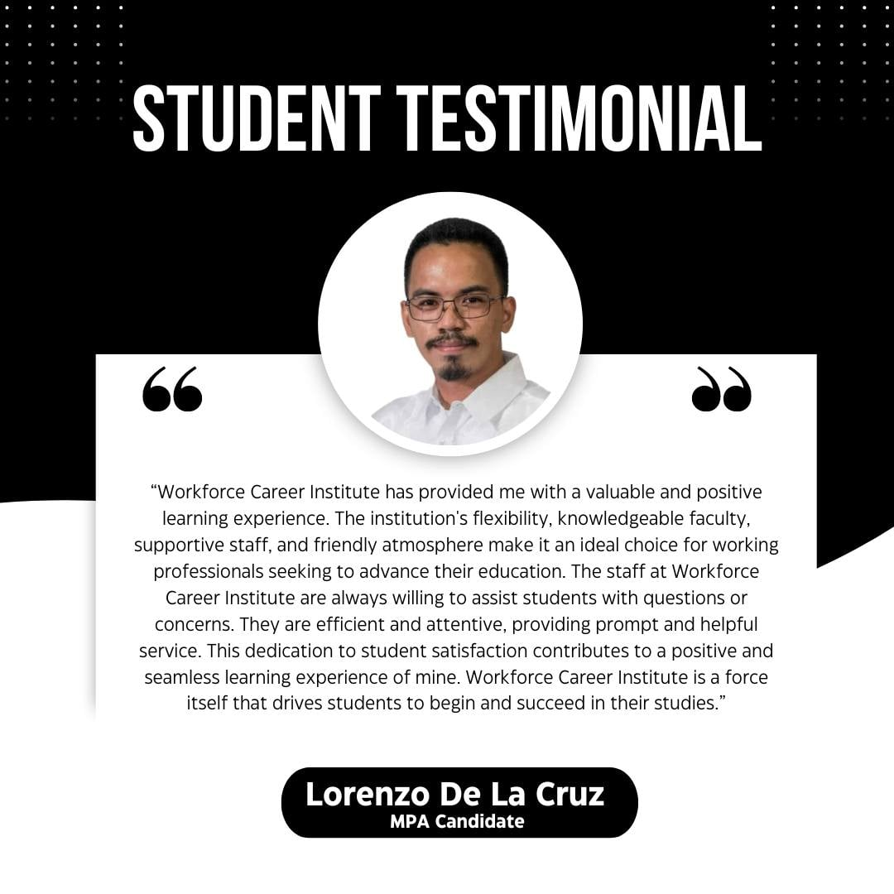

<!DOCTYPE html>
<html lang="en">
<head>
  <meta charset="UTF-8" />
  <meta name="viewport" content="width=device-width, initial-scale=1.0"/>
  <title>About Us</title>
  <link href="https://cdn.jsdelivr.net/npm/tailwindcss@2.2.19/dist/tailwind.min.css" rel="stylesheet">
    <style>
        /* Basic Styling -  Expand this significantly for a professional look */
        .logo-container { display: flex; justify-content: space-around; } /* For logos */
        .logo { max-width: 35px; } /* Adjust as needed */

        .fade {
      transition: opacity 1s ease-in-out;
    }
    .carousel-caption {
      position: absolute;
      bottom: 1.5rem;
      left: 1.5rem;
      background: rgba(0, 0, 0, 0.6);
      color: white;
      padding: 0.5rem 1rem;
      border-radius: 0.5rem;
    }
    .nav-link {
      position: relative;
      padding-right: 1rem;
      padding-left: 1rem;
    }
    .nav-link::after {
      content: '';
      position: absolute;
      left: 0;
      bottom: -2px;
      width: 0;
      height: 2px;
      background-color: white;
      transition: width 0.3s ease-in-out;
    }
    .nav-link:hover::after {
      width: 100%;
    }
    .dropdown:hover .dropdown-menu {
      display: block;
    }
    .dropdown-menu {
      display: none;
      position: absolute;
      background-color: white;
      color: black;
      min-width: 200px;
      z-index: 1000;
      box-shadow: 0px 8px 16px rgba(0,0,0,0.2);
    }
    .dropdown-menu a {
      display: block;
      padding: 10px;
      color: black;
      text-decoration: none;
    }
    .dropdown-menu a:hover {
      background-color: #f1f1f1;
    }

    /* Enhanced board image style with yellow border */
    .legal-image {
      border: 4px solid #FBBF24; /* Tailwind yellow-400 */
      border-radius: 12px;
      box-shadow: 0 6px 10px rgba(0, 0, 0, 0.15);
      width: 240px;
      height: 300px;
      object-fit: cover;
      transition: transform 0.3s ease, box-shadow 0.3s ease;
    }
    .legal-image:hover {
      transform: scale(1.05);
      box-shadow: 0 10px 20px rgba(0, 0, 0, 0.2);
    }

    /* Section title with bottom border */
    .section-title {
      @apply text-4xl font-extrabold mb-8 text-blue-800 inline-block border-b-4 border-yellow-400 pb-2;
    }
 
    </style>
</head>
<body class="bg-gray-50 text-gray-800 font-sans">

  <!-- Header -->
  <header class="bg-gray-800 text-white shadow sticky top-0 z-50 border-b-4 border-yellow-400">
    <div class="container mx-auto flex items-center justify-between py-4 px-4">
      <div class="flex items-center space-x-3">
        
        <div>
          <span class="block text-2xl font-bold">WORKFORCE</span>
          <span class="block text-m font-light tracking-widest text-gray-300 w-full">CAREER INSTITUTE</span>
        </div>
      </div>

      <!-- Navigation -->
      <nav class="hidden lg:flex text-lg font-semibold tracking-wide space-x divide-x divide-gray-500">
        <a href="index.html" class="nav-link text-white hover:text-gray-300">HOME</a>
        <div class="relative dropdown">
          <a href="#" class="px-4 hover:text-white nav-link">ABOUT US</a>
          <div class="dropdown-menu">
            <a href="profile.html">Profile</a>
            <a href="vision.html">Vision, Mission and Core Values</a>
            <a href="legalities.html">Legalities</a>
            <a href="board.html">Board of Directors</a>
            <a href="team.html">The Working Team</a>
            <a href="teaching.html">The Teaching Force</a>
            <a href="community.html">Community Extension Program</a>
          </div>
        </div>
        <a href="academic.html" class="px-4 hover:text-white">ACADEMIC</a>
        <div class="relative dropdown">
          <a href="#" class="px-4 hover:text-white nav-link">STUDENTS</a>
          <div class="dropdown-menu">
            <a href="admission.html">Admission and Registration</a>
            <a href="student.html">Student Support</a>
            <a href="accounts.html">Accounts</a>
            <a href="research.html">Student Research</a>
            <a href="career.html">Career Center</a>
            <a href="classroom.html">The Classroom</a>
          </div>
        </div>
        <a href="contact.html" class="px-4 hover:text-white">CONTACT</a>
      </nav>

      <!-- Action Buttons -->
      <div class="space-x-3">
        <a href="#apply" class="bg-yellow-400 hover:bg-yellow-500 text-gray-900 font-semibold px-4 py-2 rounded-full text-sm shadow-sm">Enroll Now</a>
        <a href="#help" class="border border-white text-white hover:bg-white hover:text-gray-900 font-semibold px-4 py-2 rounded-full text-sm shadow-sm">Get Help</a>
      </div>
    </div>
  </header>
  
  </section>
     <h2>PROFILE</h2>
     
    <style: width: 50px; height: 50px; object-fit: cover; border-radius: 50%;>
        <p>Workforce Career Institute is a non-stock, non-profit educational institution focused on preparing individuals for careers in various industries. It offers a variety of programs aimed at developing specific skills and knowledge relevant to today’s workplace requirements. It further guarantees holistic services and support to its students from admission to graduation.</p>
        <p><em>✓ Career Mapping Sessions </em></p>
<p><em>✓ Dynamic and Collaborative Classroom Environment</em></p>
<p><em>✓ Mentoring and Coaching Sessions </em></p>
<p><em>✓ Career Support Programs </em></p>

<p> Workforce Career Institute is the Founder’s dream come true. It all started with an ardent desire to put up an education institution that would cater to the needs of Filipinos from 
career programs to graduate programs. </p>
<p> The pandemic changed the education landscape in the country. The pandemic left everyone unready and many got caught off-guard – many lost their jobs and had to look
    for ways to reskill, upskill and retool to cope with the global situation. All educational institutions were quick in their transition from delivering their programs in the face-toface setup to the online modality. It paved the way in the streamlining of the utilization of 
    existing technologies to effectively deliver courses and programs.</p>
<p>The situation had inspired the Founder, Dr. Peter Elmar Cahati-an Bordo, to put up an institution that serves as a platform to the continuous delivery of 
    pandemic-proof programs. To put this into reality, he mustered the members of his family to discuss his plans. He, then, immediately got their full support.
    Hence, the foundation of the institution on May 6, 2024.
<p> Now, Workforce Career Institute is serving its purpose to the Filipino people through the delivery of various VocTech, Bachelor’s, Master’s, and Doctoral
    programs which give hope to those who are enthusiastic in learning and in imbibing careerpreneurship spirit.</p>
    </section>

    <section>
       <h2> VISION </h2>
        <p>It envisions itself to be the premier career-focused institution in Aklan by helping individuals in building and refining their skillsets 
            and become job-ready.</p>
    </section>

         <section>
      <h2> MISSION </h2>
        <p>Workforce Career Institute is committed to:</li>
<li> Develop and implement industry-based programs which will enable individuals to 
cope with the every-changing needs of their respective industries.</li>
<li> Provide practical and real-world education which bridges the gap between theory 
and application.</li>
<li> Build strong and dynamic partnership with various industry players to support its 
students’ job search efforts.</li>
    </section>       

        <section>
        <h2> CORE VALUES </h2>
        <p> Workforce Career Institute's Core Values include: </p>
         <p> Advocate of distance education and computer-aided learning </p>
        <li>  Believer of lifelong learning </li>
        <li> Comitted to provode quality teaching </li>
        <li> Dedicated in uplifting teamwork spirit </li>
        <li> Excellence in post-study support </li>
            
    </section>
<section class="px-4 py-10 bg-gray-100">
  <div class="max-w-7xl mx-auto text-center">
    <h2 class="text-4xl font-extrabold mb-8 text-black-800">STUDENT'S TESTIMONIALS</h2>

    <div class="container">
      <div class="testimonial">
        
      </div>

      <div class="testimonial">
        
      </div>

      <div class="testimonial">
        
      </div>

      <div class="testimonial">
        
      </div>
    </div>
  </div>
</section>

 <footer class="bg-gray-800 text-white text-center py-6 mt-16 shadow-inner border-t-4 border-yellow-400">
    <div class="container mx-auto">
      <p class="text-sm">&copy; 2025 Workforce Career Institute. All rights reserved.</p>
      <p class="text-xs mt-1 italic text-gray-400">Empowering Futures with Excellence and Innovation</p>
    </div>
  </footer>

</body>
</html>
